시트를 연결하고,
한 해 추진현황을 함께 채웁니다.
관리자가 관리 메뉴에서 역할과 실적관리 시트를 정해 두면, 팀원은 로그인해서 공유된 시트를 불러와 과제와 일정을 입력하고 구글시트에 저장합니다. 진척률은 일정 칸으로 자동 계산됩니다.
관리: 권한 설정 · 실적관리 시트
계정 메뉴의 관리(관리자에게만 보임)에서 팀장 · 팀원을 정하고 초대하고, 연구소가 함께 쓰는 실적관리 시트를 연결합니다. 탭은 권한 설정과 실적관리 시트 두 개이고, 맨 위 한 줄에서 권한 시트를 엽니다.
권한 설정
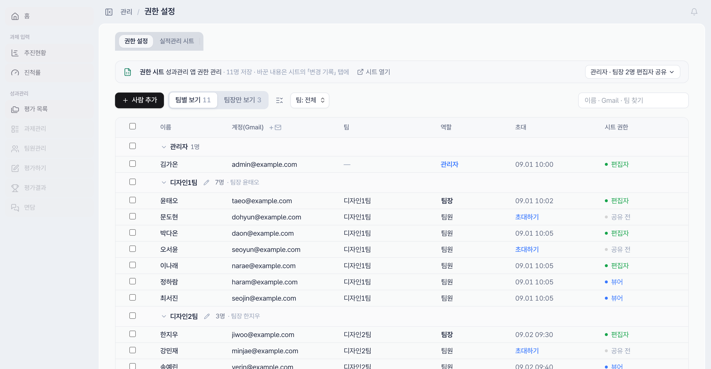
- 관리자 → 팀마다(팀장 먼저) → 팀 없음 순으로 묶여 보입니다.
- 묶음 제목을 눌러 접고 펴고, 위 아이콘으로 모두 접기 · 펴기.
자세히 보기 · 3줄
- 묶음 앞 체크로 그 팀 전체를 고릅니다.
- 위에서 팀별 보기 / 팀장만 보기를 바꾸고, 「팀: 전체」 드롭다운(팀이 둘 이상일 때)으로 한 팀만 볼 수 있습니다.
- 찾기 칸은 글자가 있으면 ✕(지우기)가 나오고 Esc로도 지웁니다.
- 역할 칸(관리자 / 팀장 / 팀원)과 이름 칸을 바로 고치면 저장됩니다.
- 자기 역할은 바꿀 수 없습니다.
자세히 보기 · 2줄
- 팀장만 보기로 보는 중에는 추가 버튼이 「팀장 추가」가 됩니다(팀별 보기에서는 「사람 추가」).
- 바꾼 내용은 권한 시트 「변경 기록」 탭에 남습니다.
- 있는 팀에서 고르고 + 새 팀 · 팀 없음도 고릅니다.
- 이름을 고쳐 Enter하면 팀 전체 이름 바꾸기 또는 이 사람만 새 팀으로를 묻습니다.
- 여러 줄을 고르면(클릭 · Shift · ⌘) 뜨는 검정 줄의 팀 옮기기로, 또는 줄의 ⠿ 손잡이를 끌어 다른 팀 묶음 머리에 놓아 옮깁니다.
- 계정(Gmail)은 아이디만 보입니다(@gmail.com 생략).
- 계정 머리글 옆 +✉를 누르면 e-mail(받는 메일) 열이 생깁니다.
자세히 보기 · 2줄
- 기본은 로그인 Gmail이고, 회사 메일로 받으려면 [아이디] [@osstem.com ▾]로 바꿉니다(전체 주소를 붙여넣으면 저절로 나뉨).
- Gmail이 없는 사람은 계정 칸에 Gmail 입력이 뜨며 아이디만 적어도 @gmail.com으로 저장됩니다.
- 초대 칸에는 보낸 시각이 남고 누르면 다시 보냅니다.
- 시트 권한 칸은 관리자가 표시한 값(편집자 · 뷰어 · 공유 전/대기)이며 구글에서 직접 읽지는 않습니다.
사람 추가
- 사람 추가에서 세 가지 방법 중 하나를 고릅니다.
- ① 이름만 적어 추가는 쉼표로 여러 명을 적습니다.
자세히 보기 · 8줄
- Gmail은 나중에 표에서 넣습니다.
- ② 한 줄에 한 명씩 Gmail · 받는 메일 · 이름을 붙여 넣거나 엑셀로 넣습니다.
- ③ 추진현황 담당자에서 가져오기는 추진현황을 한 번 불러온 뒤에 보입니다.
- 담당팀이 팀 칸과 같은 과제의 담당자 중 명단에 없는 사람을 많이 맡은 순으로 보여 줍니다.
- 모든 팀을 체크하면 전체가 보입니다.
- 사람을 골라 선택한 N명 추가를 누르면 이름만 들어가고 Gmail은 표에서 넣습니다.
- 이미 등록된 사람이면 어느 팀 · 누가 추가했는지 알려 줍니다.
- Gmail 없이 이름만 같은 줄이 여럿이면 같은 이름 중복 N명 · 정리로 하나만 남깁니다.
초대 메일
- 표에서 사람을 고르면 아래쪽에 뜨는 검정 줄에서 초대 메일 보내기를 누릅니다.
- 이 창은 평가 목록 · 팀원관리 · 관리에서 모두 같습니다.
자세히 보기 · 9줄
- 왼쪽 보낼 메일은 미리보기가 곧 실제 메일입니다.
- 제목 · 인사말은 점선 칸을 눌러 고칩니다.
- 오른쪽 초대할 사람에는 고른 사람이 Gmail 아이디 칩으로 미리 들어 있습니다.
- 마지막에 N명에게 보내기를 누릅니다.
- 관리자는 오른쪽 아래에서 로그인 문의 받는 사람(초대한 팀장 / 관리자)을 고릅니다.
- 메일에는 로그인할 계정이 적힌 「시작 →」 버튼과 문의하기 버튼이 들어 있습니다.
- 「처음 로그인할 때」 안내도 있습니다.
- 「Google에서 확인하지 않은 앱」 화면에서는 고급 → 페이스로 이동을 누르라는 내용입니다.
- Gmail이 없는 동안은 초대 · 시트 공유 목록에서 빠집니다.
실적관리 시트 공유
- 초대를 보내면 맨 위에 시트 공유 대기 N명 줄과 관리 메뉴 옆 주황 숫자가 생깁니다.
- 대기 N명 고르기 → 시트 공유 → Gmail이 복사되면 실적관리 시트 열기에서 [공유]에 붙여넣고 편집자로 공유함 / 뷰어로 공유함을 누릅니다.
- 줄의 시트 권한 칸에서 직접 바꿀 수도 있고, 시트 공유 대기만 보기로 거릅니다.
빼기
- 그만둔 사람은 고른 뒤 검정 줄의 빼기.
- 시트 공유는 시트를 열어 직접 해제합니다.
팀 이름 바꾸기 · 팀 이동
- 관리자는 권한 설정 팀 묶음 머리의 팀 이름 바꾸기로 그 팀 전원의 팀을 한 번에 바꿉니다.
- 그 뒤 팀장은 평가 목록 위 팀 이름 맞추기로 평가 · 인사평가 이력 · 승진 기준을 함께 새 이름에 맞춥니다.
자세히 보기 · 2줄
- 팀장이 직접 바꿀 때는 평가 목록 ⋯ › 팀 이름 바꾸기(권한 시트 팀 전원도 같이 바꿀지 체크)입니다.
- 드라이브 백업 폴더 · 면담 캘린더는 새 이름으로 새로 생깁니다.
- 관리에서 팀 이름을 바꾸면 팀장의 평가 목록 위에 「관리에서 내 팀이 「X」로 되어 있습니다 … 맞출까요?」 안내가 뜹니다.
- 「「X」(으)로 맞추기」를 누르면 평가 · 인사평가 이력 · 승진 기준이 새 이름으로 옮겨지고, 「나중에」는 이번 접속 동안 숨깁니다.
- 다른 팀으로 옮기는 사람은 권한 설정에서 팀 칸을 새 팀으로 바꿉니다.
- 이전 팀장의 팀원 목록에서 빠지고 새 팀장 목록에 나타납니다.
자세히 보기 · 7줄
- 이전 팀장은 성과관리 › 팀원관리 도구 줄의 팀 이동 N명 칩을 누릅니다.
- 그리고 의견 남기고 비활성(또는 팀원 삭제)을 합니다.
- 맡았던 과제 · 기여도가 자동으로 함께 저장됩니다.
- 팀원 본인은 볼 수 없습니다.
- 새 팀장의 팀원관리 표에는 그 사람이 자동으로 들어옵니다.
- 새 팀장은 이름 옆 말풍선에서 그 의견 · 과제를 봅니다.
- 이후 평가는 새 팀장이 합니다.
실적관리 시트
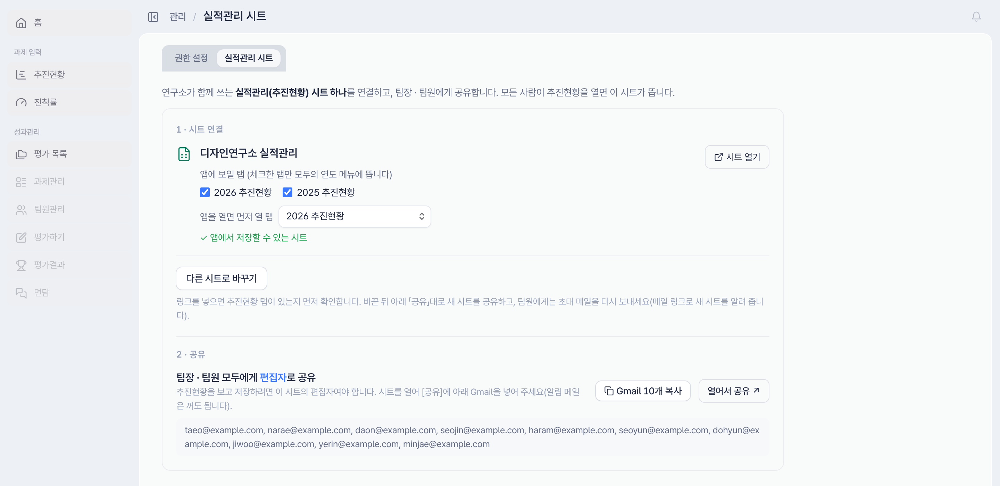
- 연구소가 함께 쓰는 실적관리 시트는 관리자가 하나만 정하고 앱 전체가 그것을 따릅니다.
- 다른 시트로 바꾸기에 링크를 넣으면 「2026 추진현황」 같은 탭이 있는지 먼저 확인합니다(시트를 바꾸면 먼저 열 탭은 비워짐).
- 앱에 보일 탭은 체크한 탭만 모두의 연도 메뉴에 뜨고, 앱을 열면 먼저 열 탭도 정합니다.
실적관리 시트는 팀장 · 팀원 모두 편집자로 공유합니다(공유는 관리자가 손으로 하고, 앱에는 표시만 남깁니다).
- 맨 위 한 줄에서 권한 시트를 열고, 관리자 · 팀장에게 편집자로 공유합니다(팀장이 팀원 명단을 저장하려면 필요).
- 팀원에게는 공유하지 않습니다(명단이 보이지 않게).
자세히 보기 · 2줄
- 팀원 앱은 초대 메일의 「계정 시작 →」 단추로 실적관리 시트를 기억합니다.
- 시트를 바꾸면 팀원에게 초대 메일을 다시 보내야 합니다.
- 관리자 = 팀장이 하는 것 전부 + 관리 / 팀장 = 과제 입력 + 성과관리 + 성과관리 › 팀원관리 / 팀원 = 과제 입력만.
- 관리 메뉴는 팀장에게 보이지 않습니다.
- 앱에 정해 둔 첫 관리자 계정은 권한 시트와 상관없이 늘 관리자입니다.
로그인과 화면 둘러보기
로그인하면 홈에서 할 일을 고릅니다. 모든 이동은 왼쪽 사이드바에서 합니다.
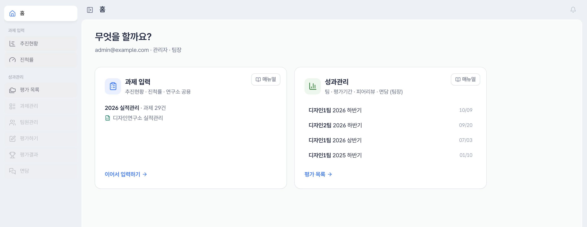
구글 계정으로 로그인
- Google 계정으로 시작을 누르고 회사 구글 계정으로 로그인합니다.
- 이때 구글시트 읽기 · 쓰기 권한도 함께 받으므로 불러오기 · 저장 때 권한 창이 따로 뜨지 않습니다.
자세히 보기 · 4줄
- 새로고침해도 다시 로그인하지 않지만(권한은 이 탭에만 보관, 탭을 닫거나 로그아웃하면 삭제), 구글 규칙상 약 1시간마다 한 번은 로그인 창이 뜰 수 있습니다.
- 초대 메일의 「계정 시작 →」 단추로 들어오면 로그인 화면에 초대받은 계정이 먼저 보입니다.
- 이 계정으로 계속을 누르면 그 계정으로 구글 로그인 창이 열립니다.
- 다른 계정이면 다른 계정으로 로그인을 누릅니다.
홈
- 과제 입력 카드에는 「2026 실적관리 · 과제 N건」과 연결된 시트 이름이 보입니다.
- 운영 시트면 읽기 전용이라고 표시됩니다.
자세히 보기 · 4줄
- 저장 안 한 변경도 카드에 보입니다.
- 이어서 입력하기는 추진현황으로 갑니다.
- 진척률은 왼쪽 메뉴에서 봅니다.
- 성과관리 카드에는 최근 평가가 보입니다.
왼쪽 사이드바
- 위에서부터 홈 · 과제 입력(추진현황 · 진척률) · 성과관리(평가 목록 · 과제관리 · 팀원관리 · 평가하기 · 평가결과 · 면담, 팀장만)입니다.
- 성과관리 메뉴들은 평평하게 나열되고, 평가를 고르기 전에는 흐리게 보입니다.
자세히 보기 · 2줄
- 사이드바 경계를 끌면 폭이 바뀌고, 사이드바를 누르거나 ⌘B로 숨깁니다.
- 접으면 아이콘만 보이고 마우스를 올리면 메뉴 이름이 나옵니다.
계정 메뉴
- 왼쪽 아래 계정 버튼을 누르면 위로 열립니다.
- 맨 위에 이메일 · 역할 · 다른 계정 연결이 있습니다.
자세히 보기 · 3줄
- 그 아래에 사용 매뉴얼 · 관리(관리자) · 데이터 백업 · 디스플레이 · 데이터 초기화 · 로그아웃이 있습니다.
- 디스플레이에서는 글자 크기와 테마를 고르며 오른쪽으로 펼쳐집니다.
- 테마는 기본 디자인 · 오렌지 · 블랙 · 블루 포인트 중에서 고르며 이 브라우저에 기억됩니다.
화면 머리(위치 줄)
- 「과제 입력 / 📁 2026 실적관리 › 추진현황」, 「성과관리 / 팀 · 2026 하반기 ▾ / 과제관리」처럼 지금 위치가 보입니다.
- 성과관리에서는 여기서 지금 보는 평가를 확인하고 바꿉니다.
- 알림은 화면 아래에 잠깐 떴다 사라지는 말풍선으로 나오고, 위쪽 종에 닫아 둔 알림이 모입니다(다음 장).
위쪽 종과 새 버전 알림
- 담당자 · 기여도가 다른 과제, 팀 이동, 목록에 없는 담당자 같은 안내를 한 줄 목록으로 모읍니다.
- ✕로 닫아도 종에 남고, 줄을 누르면 해당 화면에서 다시 띄우며, 영구 삭제도 됩니다.
- 알림이 없으면 종은 비활성입니다.
- 새 버전이 올라오면 종 맨 위에 빨간 점과 새로고침 단추가 뜹니다.
- 누르고 「새 버전을 내려받는 중」이 보이면 잠시 기다립니다.
자세히 보기 · 3줄
- 배포 직후 1~10분은 새 화면 파일이 퍼지는 중입니다.
- 기다리면 저절로 새로고침됩니다.
- 바로 시도하려면 지금 다시 시도를 누릅니다.
- 화면 안 긴 설명은 정보(ⓘ) 아이콘으로 옮겼습니다.
- 누르면 설명 상자가 열리고 화면 아래쪽에서는 위로 열립니다.
추진현황 시작하기
처음 추진현황을 열면 「추진현황을 시작하세요」 화면에서 관리자가 정한 실적관리 시트를 불러옵니다.
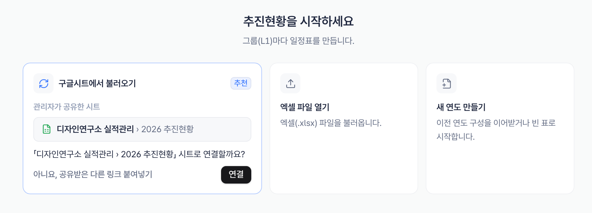
관리자가 정한 시트 확인
- 구글시트에서 불러오기 카드에 「파일 이름 › 탭 이름」으로 보입니다.
- 이름 대신 링크만 보이면 시트 이름 확인을 누릅니다.
연결
- 「… 시트로 연결할까요?」 아래 연결을 누르면 연도 탭을 읽어 그룹(L1)마다 일정표를 만듭니다.
- 실적관리 시트는 관리자가 관리 › 실적관리 시트에서 정한 하나를 앱 전체가 따르므로 연결만 누르면 됩니다.
- 다른 시트를 공유받았다면 아니요, 공유받은 다른 링크 붙여넣기로 그 링크를 넣고 이 링크로 연결합니다.
팀장 · 관리자: 다른 시작
- 엑셀 파일 열기나 새 연도 만들기로도 시작합니다.
- 팀원은 공유받은 구글시트로만 시작합니다.
최신으로 업데이트
로그인할 때마다 연결된 시트를 자동으로 다시 읽어, 다른 팀원이 저장한 내용을 받아 옵니다. 새로 로그인하지 않고 앱을 다시 열었으면 머리 줄이 파랗게 바뀌며 최신으로 업데이트 버튼이 붙습니다.
머리 줄(과제 입력 / 연도 / 추진현황 오른쪽)에는 시트 이름 › 탭 이름 ⌄ · ✓ 최신 · ○분 전 확인 · ↻가 늘 보입니다. ↻(다시 불러오기, 툴팁에 안내)는 여기 한 곳뿐입니다. 머리의 시트 이름을 눌러 연 메뉴의 ○○ 새 창으로 열기를 누르면 구글시트가 그 행에서 열립니다(도구 줄의 「구글시트에서 열기」 아이콘은 행 지정 없이 탭만 엽니다. 칸 · 행 · 구분을 고른 상태면 그 과제 행, 아니면 지금 그룹(L1)의 첫 행. 불러온 때의 행 번호라 그사이 시트에서 행을 넣고 빼면 조금 어긋날 수 있고, 최신으로 업데이트하면 맞습니다). 열어 둔 동안 5분마다, 오랜만에 다시 열면 바로 시트와 견줘 봅니다. 화면이 좁으면 시각 · 글자 버튼이 숨고 아이콘만 남습니다.
엑셀 파일로 연 표는 주황 알림이 뜹니다. 구글시트로 올리기를 누르면 연결된 시트에 올립니다(아래 「엑셀 올리기」 참고).
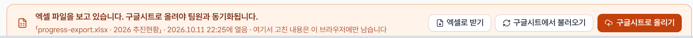
시트 · 연도 메뉴와 엑셀
머리의 「시트 › 탭 ⌄」 하나에서 연도를 고르고, 시트 열기 · 연결 설정 · 엑셀 열기/받기도 합니다.
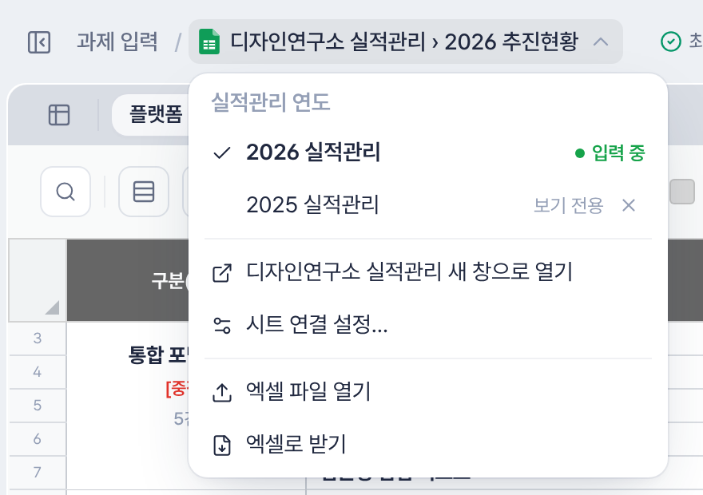
연도 고르기
- 연도마다 한 줄입니다.
- 관리자가 관리 › 실적관리 시트에서 앱에 보이도록 체크한 탭만 나옵니다(지금 보는 연도는 늘 보임).
자세히 보기 · 2줄
- 지금 입력하는 연도에서 고친 내용은 그 구글시트 탭에 저장됩니다.
- 성과관리 평가 목록의 「보는 연도」와 연도가 함께 바뀝니다(한쪽에서 바꾸면 다른 쪽도).
보기 전용 연도
- 지난 연도는 볼 수만 있습니다.
- 쓰지 않는 연도는 마우스를 올려 ✕로 목록에서 지웁니다(구글시트 탭은 지워지지 않고 다시 보이게 하는 메뉴도 없습니다).
- 메뉴를 열 때마다 시트의 탭 목록을 다시 읽어 시트에서 지운 탭은 빠집니다.
이 브라우저 연도
- 앱에서 만든 연도는 이 브라우저로 표시되고 이 브라우저에 저장됩니다.
- 휴지통 아이콘으로 지웁니다.
메뉴 아래 항목
- 시트 새 창으로 열기 · 시트 연결 설정 · 엑셀 열기/받기가 들어 있습니다.
- 입력할 탭(올해 탭만 나열, 안 쓰는 복사본은 ✕로 목록에서 빼기) · 새 연도 · 업데이트 전에 묻기는 시트 연결 설정 창 안에 있습니다.
- 시트 연결 설정은 팀장 · 관리자만(팀원은 공유받은 링크로 열기).
엑셀로 받기 · 열기 · 올리기
시트 모양 그대로(칸 색 · 메모 포함), 저장 안 한 변경까지 넣어 받습니다.
- 팀장 · 관리자만.
- 구글시트에서 xlsx로 받은 파일을 엽니다(한컴오피스 한셀 xlsx도 됨).
자세히 보기 · 4줄
- 글자 서식(조건부 서식 · 테마 색)도 읽습니다.
- 탭 연도와 다른 해의 날짜는 「2025.11.24」처럼 연도를 붙여 보입니다.
- 대분류 · L1 · L2 칸 메모는 그대로 유지합니다.
- 날짜 모양 글자(4/29 · 2026.4.7)와 소문자 s · f도 읽고, 엑셀의 숫자 서식(소수)은 보이는 모양대로 읽습니다.
- 엑셀로 연 표를 연결된 시트에 올립니다.
- 같은 이름 탭에 덮어쓰기(확인 창)이며 새 「(엑셀 날짜)」 탭은 만들지 않습니다.
자세히 보기 · 5줄
- 원본 값을 그대로 옮깁니다(숫자 · 날짜 · 공백 · 소문자 s · 이름 없는 줄 · 빈 줄 위치).
- 맨 위 제목 두 줄만 한 줄로 합쳐 올라갑니다.
- 이름 없는 줄은 확인 창에서 내용을 미리 보여 줍니다.
- 표 · 필터가 있는 탭은 새 탭으로 교체되어 탭 링크(gid)가 바뀔 수 있고, 시트의 고정 줄 · 열은 다시 맞춰집니다.
- 날짜 모양 글자는 진짜 날짜로 올라갑니다.
- 시트를 앱 안에 띄우는 보기는 없앴습니다.
- 도구 줄의 구글시트에서 열기(새 창)를 쓰세요.
- 새 창의 구글 로그인 · 공유 단추는 앱 로그인으로 이미 연결돼 있어 따로 쓸 필요가 없습니다.
새 연도 만들기(팀장 · 관리자)
홈의 과제 입력 카드 › 새 연도 만들기, 또는 추진현황 머리 시트 › 탭 ⌄ 메뉴 맨 아래 + 새 연도 만들기에서 엽니다. 지금 연도의 구성을 이어받거나 빈 표로 한 해를 시작하고, 어디에 둘지 고릅니다.
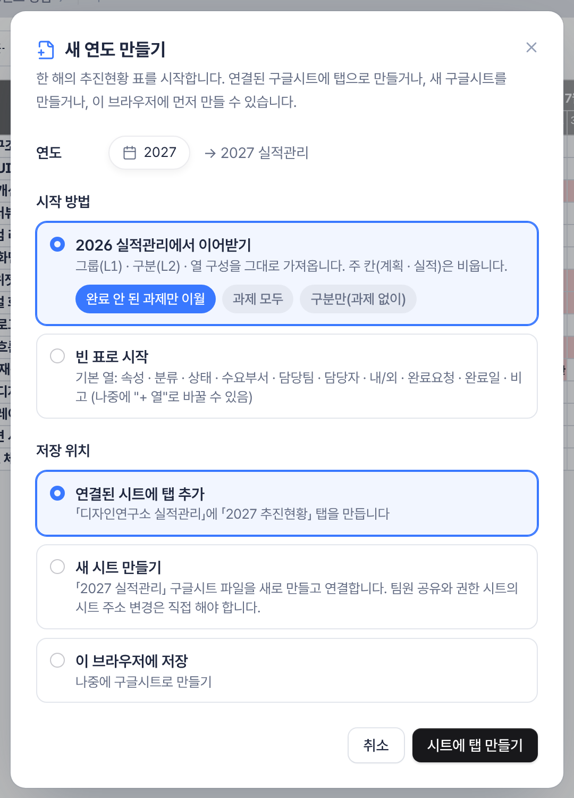
연도
- 만들 연도를 고릅니다.
- 이미 있는 연도는 만들 수 없습니다.
시작 방법
- 이어받기는 그룹(L1) · 구분(L2) · 열 구성을 그대로 가져오고 주 칸(계획 · 실적)은 비웁니다.
- 과제는 완료 안 된 과제만 이월 / 과제 모두 / 구분만(과제 없이) 중에서 고릅니다.
- 빈 표로 시작은 기본 열과 첫 그룹(L1) 이름으로 시작합니다.
저장 위치
- 세 가지 중에서 고릅니다.
- ① 연결된 시트에 「YYYY 추진현황」 탭을 추가합니다.
자세히 보기 · 3줄
- ② 새 시트 만들기는 「YYYY 실적관리」 구글시트 파일을 새로 만들고 연결합니다.
- ③ 이 브라우저는 나중에 구글시트로 만들 수 있습니다.
- 새 시트를 만들면 팀원 공유와 권한 시트의 팀별 시트 주소 변경은 관리자가 직접 합니다.
추진현황 입력하기
그림을 보며 따라 하세요. 그룹(L1) 탭별 일정표에서 과제와 일정을 입력합니다.
입력하기를 누릅니다
도구 줄의 파란 입력하기 단추를 누르면 입력 모드가 켜집니다. 끝나면 입력 끝내기를 누릅니다.
주 칸에 계획 · 실적을 칠합니다
① 계획(회색) ② 실적(분홍) ③ 지우개를 고르고 주 칸을 누르거나 끌어서 칠합니다.
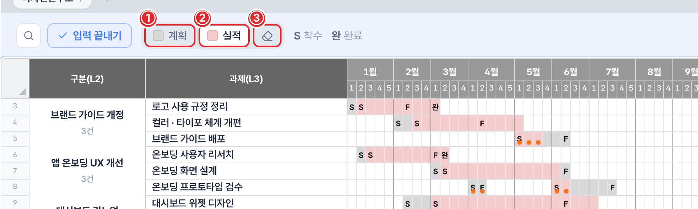
칸 글자는 칸을 눌러 고칩니다
① 칸을 더블클릭하면 글자를 고칠 수 있고 ② 서식 막대(글자색 · 칸색 · 크기 · 굵게 · 정렬)가 위에 뜹니다. Enter로 반영, Esc로 취소합니다.
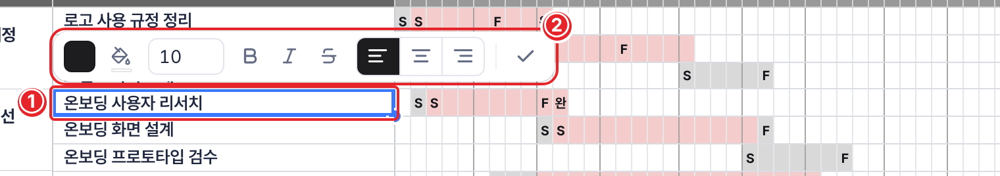
분류 · 상태는 목록에서 고릅니다
분류나 상태 칸을 누르면 칩 목록이 뜹니다. 하나를 고르면 들어갑니다.
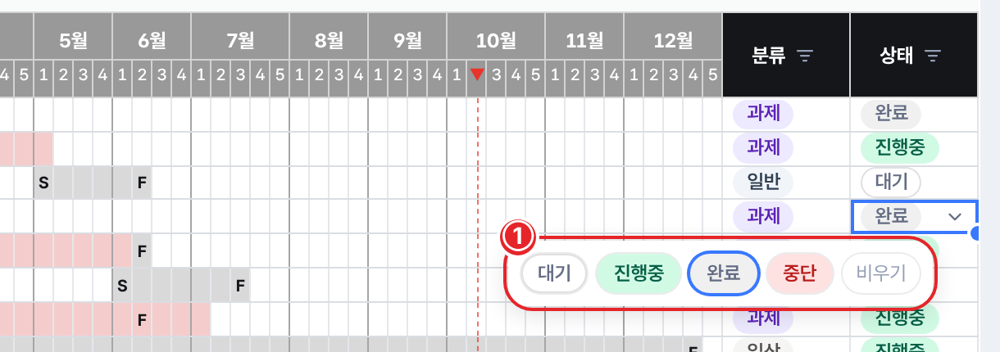
채우기: 점을 끌면 반복 입력됩니다
칸을 고르면 ① 오른쪽 아래에 작은 점이 생깁니다. 엑셀처럼 끌면 같은 값이 이어서 들어갑니다.
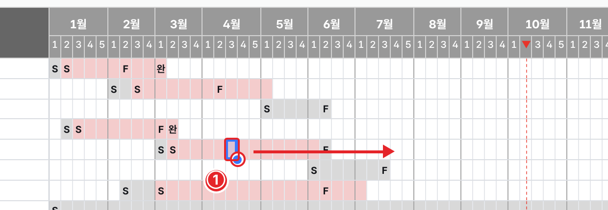
행 · 열 추가
행 아래 경계에 마우스를 올리면 ① + 행, 열 머리글 경계에서는 ② + 열이 나옵니다. 그룹(L1)은 탭 줄 끝의 +로 추가합니다(그림은 일정 줄여보기 화면).
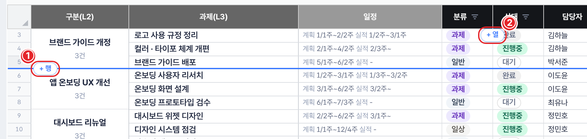
칸 우클릭 메뉴
잘라내기 · 복사 · 붙여넣기 · 메모 · 행/열 삽입 · 글자색 · 칸색을 여기서 합니다.
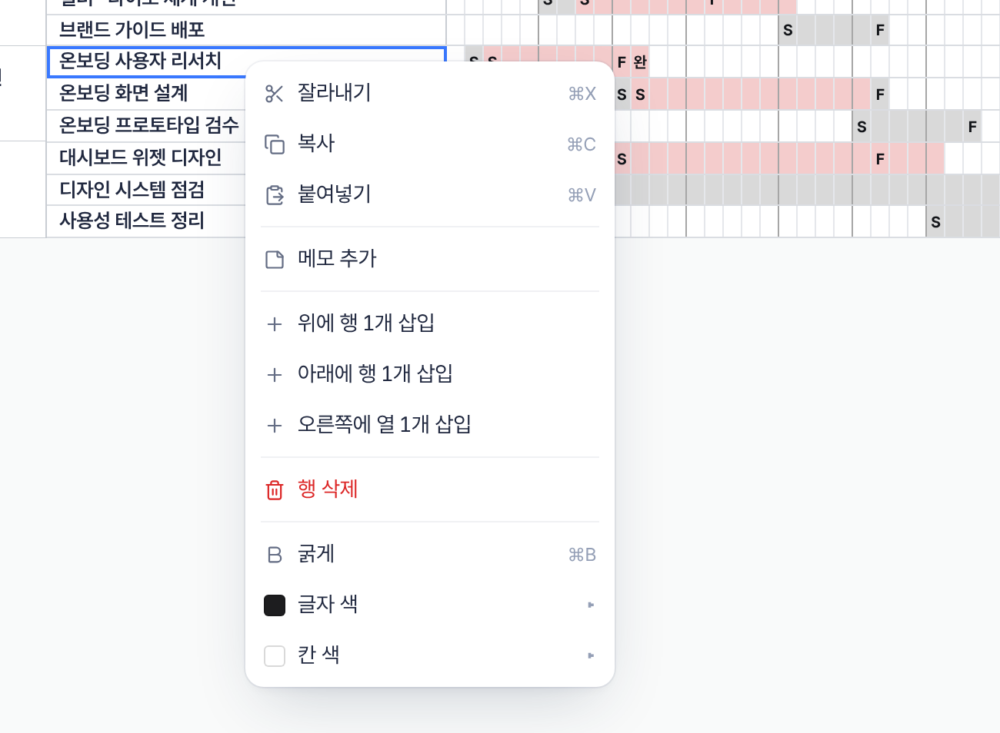
행 번호 우클릭 메뉴
행 복제(값 · 서식 그대로 바로 아래에) · 행 삽입 · 행 삭제 · 행 색 · 높이 맞추기가 있습니다.
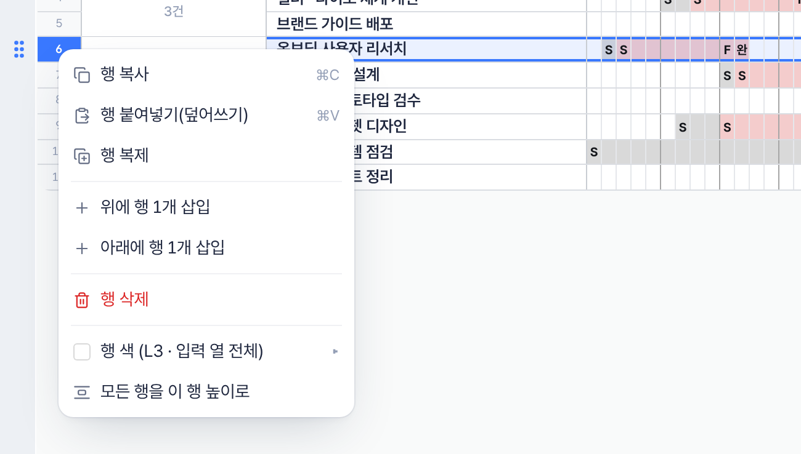
그 밖의 기능 모두 보기(단축키 · 병합 · 선택 · 행 높이 등)
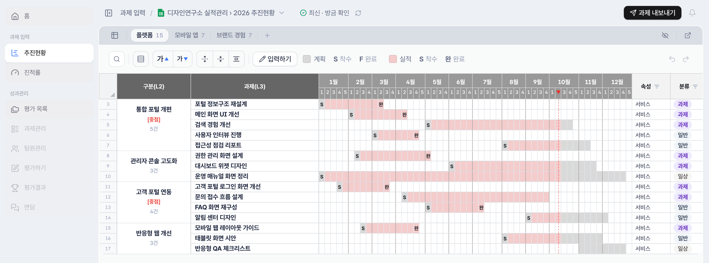
입력하기
- 도구 줄의 입력하기를 누르면 입력 모드가 됩니다.
- 끝나면 입력 끝내기를 누릅니다.
칸 선택과 입력
- 한 번 누르면 선택, 더블클릭하거나 바로 타자를 치면 입력입니다.
- Enter 반영, Esc 취소.
- 여러 칸은 끌거나 Shift+클릭으로 고릅니다.
서식 막대
- 서식 막대는 칸 하나는 더블클릭해서 글자를 고칠 때, 행 번호 · 열 머리글 · 구분(L2) 머리글로 고르면 바로 뜹니다.
- 글자색 · 칸 색 · 크기 · B/I/S · 정렬을 고른 범위 전체에 적용합니다(병합 · 나누기는 막대가 아니라 우클릭 메뉴).
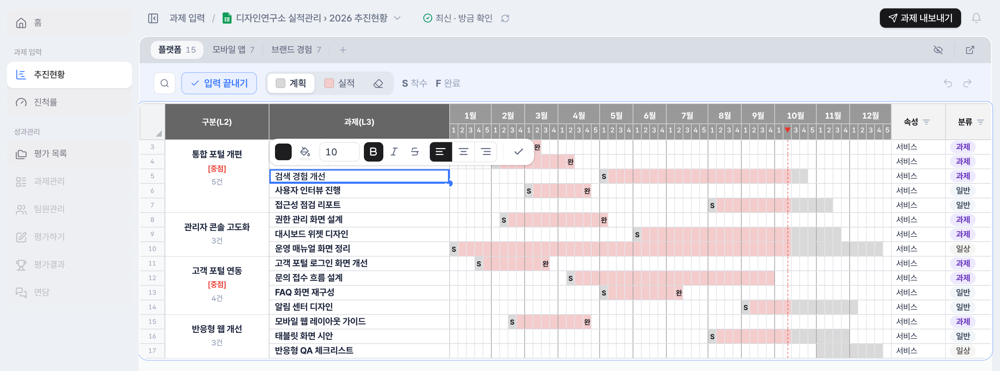
칸을 누르면 칩 목록에서 골라 넣습니다.
고른 칸 오른쪽 아래 점을 끌면 엑셀처럼 반복 입력됩니다.
- ⌘/Ctrl+C ⌘/Ctrl+V.
- 엑셀 · 구글시트에서 여러 칸을 복사해 와도 됩니다.
- 행 · 열 추가/삭제, 칸 색, 서식 지우기, 병합 등.
- 병합하면 칸마다 적힌 글을 줄을 바꿔 이어 한 칸에 넣습니다(같은 글은 한 번만).
- 클릭하면 선택, 더블클릭이나 Enter로 이름 고치기.
- 「이름 [중점]」처럼 쓰면 태그가 붙습니다.
행 아래 경계에 마우스를 올리면 뜨는 + 행(또는 행 번호 우클릭 › 위/아래에 행 삽입)으로 과제, 탭 줄 끝의 +로 그룹(L1), 열 머리글 경계의 + 열로 입력 열을 만듭니다.
- 칸은 클릭하거나 끌어서 고릅니다.
- 여러 칸은 범위 바깥이 파란 테두리, 안쪽이 옅은 파랑이 됩니다.
자세히 보기 · 6줄
- 행은 행 번호를 클릭하고, Shift로 여러 행을 고릅니다.
- 열은 머리글을 클릭하면 지금 탭의 그 열 전체가 골라집니다.
- 표 전체는 왼쪽 위 모서리 칸을 누르고, 다시 누르면 해제됩니다.
- 구분(L2)은 구분 칸을 클릭하면 그 칸만, 구분 머리글을 클릭하면 구분 열 전체가 골라집니다.
- 나중에 바꾼 서식이 이깁니다.
- 새로 넣는 행은 기준 행의 글자 서식을 이어받습니다.
- 칸 우클릭: 잘라내기 · 복사 · 붙여넣기 / 메모 / 행 · 열 · 셀 삽입 / 행 · 열 삭제 / 굵게 · 글자 색 · 칸 색 / 셀 병합 · 병합 해제.
- 행 번호 우클릭에는 행 복제(값 · 칸 색 · 서식 그대로 바로 아래)가 있습니다.
- 과제(L3) 머리글을 누르면 L3 열 전체가 선택됩니다.
- 열 머리글을 더블클릭하면 제목을 편집합니다.
- 이름 · 글자 색 · 크기 · 정렬을 바꿀 수 있습니다.
자세히 보기 · 5줄
- 이름은 새로 넣은 열과 앱이 모르는 열만 바꿀 수 있습니다.
- 상태 · 담당자 같은 기본 열은 이름이 고정입니다.
- 우클릭하면 머리글 배경 › · 머리글 글자 색 ›와 열 삽입 · 삭제 · 숨기기가 나옵니다.
- 색 메뉴를 누르면 팔레트가 열리고 ‹로 돌아갑니다.
- 글자 서식 · 색은 이 브라우저에 기억하고 열 이름은 저장하면 시트 머리글에 들어갑니다.
- 메모가 있는 칸에 마우스를 올리면 메모 상자가 뜹니다.
- 상자 안에서 글을 드래그해 복사하고, 바로 고치고(바깥을 누르면 저장, Esc는 취소), 크기도 조절합니다.
- 우리 팀이 아닌 그룹(L1) 탭은 탭을 우클릭 › 이 그룹 숨기기(이 그룹만 보기는 나머지를 한 번에 숨김)로 숨깁니다.
- 탭 줄 오른쪽 끝의 눈 아이콘 + 숫자를 누릅니다.
자세히 보기 · 6줄
- 숨긴 게 없으면 아이콘만 보입니다.
- 목록에서 파란 뜬 눈 = 보임, 회색 감은 눈 = 숨김으로 바꿀 수 있고, 모두 보기로 되돌릴 수도 있습니다.
- 시트에서는 지워지지 않고 이 브라우저에서만 안 보입니다.
- 저장 안 한 변경이 있는 그룹 탭에는 이름 앞에 주황 점이 있습니다.
- 위치는 과제 수 오른쪽 위이고, 탭이 좁으면 이름 오른쪽 위입니다.
- 과제가 늘거나 줄면 과제 수도 주황 굵게 보입니다.
- 열 머리글을 누르고(Shift로 여러 열) 우클릭 › 열 숨기기.
- 숨긴 일정 열은 과제(L3) 머리 칸 오른쪽 위 모서리 달력 아이콘으로, 다른 열은 숨긴 자리의 ◀▶로 다시 펼칩니다.
- 이 브라우저에서만 숨기고 시트 · 엑셀 받기에는 모든 열이 그대로 있습니다.
- 도구 줄 맨 앞 돋보기를 누르면 칸이 넓어져 L2 · L3 · 담당자로 찾습니다.
- 글자가 있으면 오른쪽에 ✕(지우기)가 나오고 Esc로도 지웁니다.
- 칸 경계에 마우스를 올리면 뜨는 + 열 · + 행 · 구분 나누기는 경계에서 떼도 잠깐 남아 눌러 쓸 수 있습니다.
- 행 번호를 누르면 왼쪽에 손잡이(⋮⋮)가 생기고, 끌면 놓일 자리에 주황 선이 보입니다(같은 구분 안에서만).
- 칸 경계를 끌어 조절하고 행 경계 더블클릭은 자동 높이, 행 우클릭 모든 행을 이 행 높이로로 한 번에 맞춥니다.
- 행간 버튼은 기본 0(예전보다 약간 좁음)에서 한 번에 1단계씩, 얇게(-3)부터 넓게(40px)까지이며 행 높이를 한 번에 통일합니다.
자세히 보기 · 2줄
- 구분(L2) 칸 내용은 행 높이를 키우지 않습니다.
- 12월 마지막 주 바깥 선을 끌면 모든 주 칸이 똑같이 늘고 줍니다.
- 날짜는 4/7(월/일) 모양으로 보입니다.
- 「저장했습니다」 · 「연결했습니다」 같은 알림은 화면 아래에 잠깐 떴다 사라집니다.
- 표 밖 빈 곳을 누르면 칸 · 행 선택이 풀립니다.
- Tab · Shift+Tab은 표 안에서만 움직입니다(구분 칸 Tab → 그 구분 첫 과제, 일정 칸도 Tab 이동).
보드 · 타임라인으로 보기
추진현황을 상태별 칸반 보드나 구분별 타임라인으로 봅니다.
도구 줄의 표 | 보드 | 타임라인(아이콘 하나로 접혔다가 마우스를 올리면 펼쳐짐)으로 같은 과제(지금 그룹 탭 · 찾기 · 필터 · 저장 안 한 변경 포함)를 다른 모양으로 봅니다. 고른 모양은 이 브라우저에 기억됩니다.
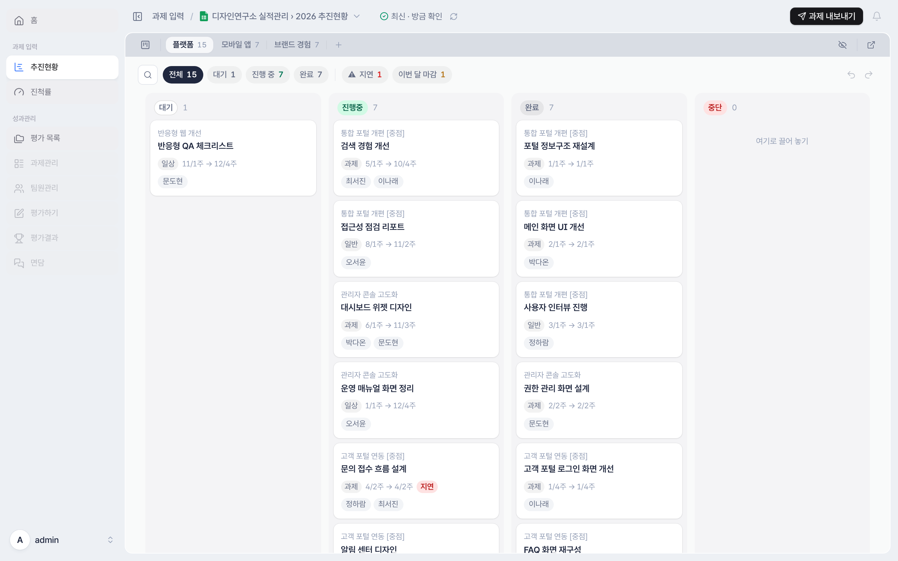
- 표 · 보드 · 타임라인 버튼 바로 옆에 단계와 위험이 있습니다.
- 단계는 전체 · 대기 · 진행 중 · 보류·중단 · 완료 중 하나를 고릅니다.
자세히 보기 · 4줄
- 위험은 ⚠ 지연 · 이번 달 마감이며, 다시 누르면 해제됩니다.
- 위험은 단계와 함께 걸 수 있습니다.
- 보드는 단계를 고르면 그 칸만, 위험은 카드를 거르며 타임라인도 같습니다.
- 보기를 바꿔도 유지되고 그룹(L1) 탭을 바꾸면 전체로 돌아갑니다.
- 단계(대기 · 진행중 · 완료 · 보류 · 중단)별 칸에 과제 카드가 놓이고, 칸 너비는 화면 폭에 맞게 자동으로 조절됩니다(좁으면 가로 스크롤).
- 상태 칸에 단계가 적혀 있으면 그 칸에 놓입니다.
자세히 보기 · 5줄
- 비었거나 다른 값이면 일정 칸으로 정합니다.
- 완료 표시는 완료, 착수 표시나 실적(분홍)은 진행중입니다.
- 계획만 있거나 아무것도 없으면 대기입니다.
- 카드에는 구분, 과제, 분류, 계획 기간, 담당자 이름(이름만 표시)이 보이고 계획이 끝났는데 완료가 없으면 지연이 붙습니다.
- 카드를 다른 칸으로 끌면 상태가 바뀝니다(저장 안 한 변경 · 구글시트에 저장해야 반영).
- 구분(L2)마다 회색 막대에 이름과 완료 비율이 보입니다.
- 과제마다 둥근 막대 하나가 기간(계획 ∪ 실적)입니다.
자세히 보기 · 7줄
- 그 안을 실적(분홍 칸)이 기록된 만큼 채웁니다(완료면 끝까지).
- 계획이 끝났는데 완료가 없으면 이후 구간에 빨간 빗금과 지연.
- 검은 세로선은 오늘이고 계획 · 실적 범례는 회색입니다.
- 왼쪽은 구분 줄(꺾쇠 ⌄/› · 색 점 · 이름) 아래 과제가 ↳로 들여 쓰이고 상태 표시는 과제명 오른쪽에 있습니다.
- 구분 앞 꺾쇠로 접고 펴며(접으면 「N건」), 범례 앞 아이콘으로 모두 접기 · 펼치기(과제관리와 같은 아이콘).
- 구분 색 점을 누르면 색 10개 중에서 고르고 기본 색으로 되돌립니다(접기 · 색은 이 브라우저에 기억).
- 과제명 칸 경계를 끌면 너비가 바뀝니다(더블클릭 = 기본).
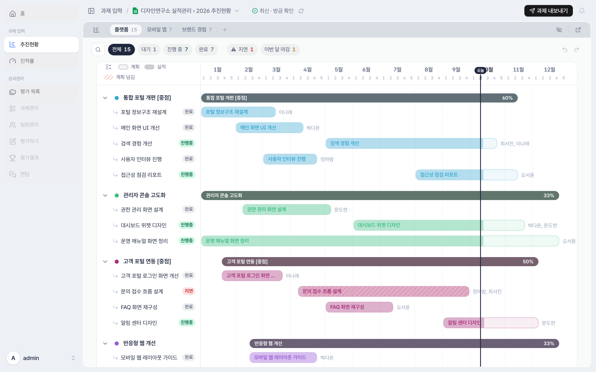
입력하기와 저장
입력하기로 주 칸에 계획과 실적을 넣고, 구글시트에 저장해야 다른 팀원이 받아 볼 수 있습니다.
입력하기
- 도구 줄의 입력하기를 누르면 입력 모드가 켜집니다.
- 도구 줄이 연한 파랑으로 바뀌고 표에 얇은 파란 테두리가 생기며, 버튼이 ✓ 입력 끝내기로 바뀝니다.
자세히 보기 · 7줄
- 저장할 수 없는 시트(읽기 전용)에서 입력하기를 누르면 「이 시트는 읽기 전용입니다」로 먼저 알려 줍니다.
- 그래도 입력(연습)을 고르면 입력할 수 있습니다.
- 이때는 저장되지 않습니다.
- 입력 모드는 주 칸에 계획 · 실적을 칠하는 모드이고, 칸 글자는 입력하기 없이도 칸을 눌러 고칠 수 있습니다.
- 입력 모드 중에는 보기 전환이 숨습니다.
- 계획(회색) · 실적(분홍) · 지우개를 고르고 주 칸을 누르거나 끌어서 칠합니다.
- 도구를 우클릭하면 색 팔레트가 열립니다.
시작 · 끝 표시
- 칠한 묶음의 첫 주에 S가 찍히고, 계획이 끝나는 주에는 F가 자동으로 찍힙니다.
- 실적은 끝난 주 칸을 한 번 더 누르면 완이 찍히고, 다시 누르면 진행 중(글자 없음)으로 돌아갑니다.
저장 안 한 변경 확인
- 고친 칸에는 주황 점이 찍히고, 머리 줄에 ● 저장 안 한 변경 N건 · 되돌리기 · 구글시트에 저장이 보입니다.
- 고친 내용은 먼저 이 브라우저에만 쌓입니다.
자세히 보기 · 3줄
- 머리 줄의 되돌리기는 저장 안 한 변경을 모두 지우고 시트 값으로 돌립니다.
- 한 단계씩은 도구 줄의 되돌리기 · 다시 하기 아이콘이나 ⌘/Ctrl+Z, ⌘/Ctrl+Shift+Z를 씁니다.
- 화면이 좁으면 시각 · 「되돌리기」 · 「과제 내보내기」 글자가 숨고 아이콘만 남습니다.
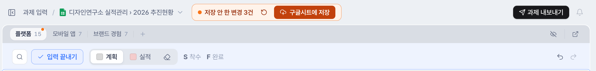
구글시트에 업데이트
- 구글시트에 저장(또는 입력 끝내기 때 뜨는 창)을 누르면 「N건의 변경이 있습니다. 구글 시트에 업데이트하여 공유하시겠습니까?」 창이 뜹니다.
- 나중에 / 지금 업데이트를 고릅니다.
자세히 보기 · 4줄
- 창의 다음부터 묻지 않고 바로 업데이트를 체크하면 앞으로 바로 올라갑니다.
- 과제 삭제가 있거나 연구소 운영 시트에 저장할 때는 체크 칸이 없고 늘 묻습니다.
- 다시 켜기는 시트 연결 설정의 업데이트 전에 묻기에서 합니다.
- 업데이트 때마다 시트를 새로 읽어 그사이 남이 바꾼 칸은 덮지 않고 주황 점으로 알려 줍니다.
변경 기록
- 업데이트하면 시트의 숨김 탭 변경 기록에 한 줄씩 남습니다.
- 시각 · 누가 · 연도 탭 · 과제 · 바꾼 칸 · 이전 값 · 새 값이 적힙니다.
자세히 보기 · 2줄
- 새 과제 · 삭제 · 줄 옮김 · 열 추가/삭제 · 구분 이름도 남습니다.
- 구글시트에서 보기 › 숨겨진 시트 › 변경 기록으로 보고, 시트 전체를 되돌리려면 파일 › 버전 기록을 씁니다.
창 닫기
- 저장 안 한 변경은 저장할 때까지 남아 있습니다.
- 저장하지 않고 탭을 닫으려 하면 브라우저가 한 번 묻습니다.
엑셀로 받기 · 성과관리로 내보내기
머리의 시트 › 탭 ⌄ 메뉴 맨 아래 엑셀로 받기를 하고, 팀장은 머리 줄 과제 내보내기로 그룹(L1)을 성과관리로 보냅니다(다음 성과관리 장 참고).
진척률
추진현황의 일정 칸으로 착수 · 완료를 자동으로 세고, 구글시트에 저장하거나 PPT · 엑셀로 받습니다.
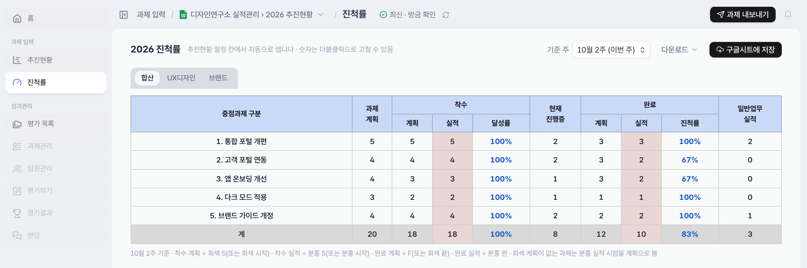
기준 주 고르기
- 오른쪽 위 기준 주에서 어느 주까지 셀지 고릅니다(기본은 이번 주).
- 숫자 칸을 더블클릭하면 고칠 수 있고, 우클릭하면 그 칸의 과제 목록을 보거나 자동값으로 되돌립니다.
구글시트에 저장
- 구글시트에 저장을 누르면 저장할 곳(「디자인연구소 추진현황 › 2026 진척률」처럼 같은 파일의 진척률 탭)을 확인한 뒤 씁니다.
- 합산과 실별 표가 한 탭에 위아래로 들어가고, 탭이 없으면 새로 만들며 이미 있으면 내용을 지금 표로 바꿉니다.
자세히 보기 · 2줄
- 저장하면 시트에서 열기 링크가 나옵니다.
- 팀원은 시트에서 같은 표를 봅니다.
다운로드 · PPT
다운로드 › PPT는 미리보기에서 넣을 탭을 골라 탭마다 한 장(16:9)으로 받습니다.
다운로드 · 엑셀
- 다운로드 › 엑셀은 표마다 시트 한 장(합산 · 실 이름)으로 받습니다.
- 화면과 같은 색(머리글 파랑 · 실적 분홍 · 합계 회색)입니다.
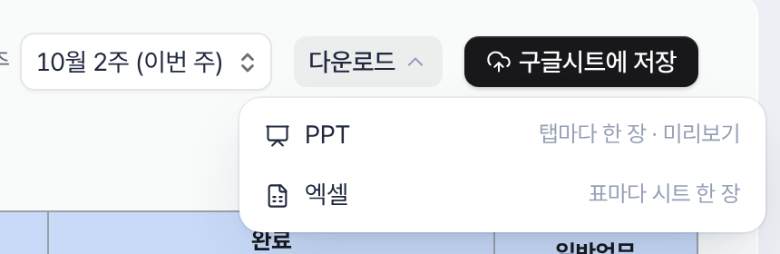
앱으로 설치하고 삭제하기
별도 설치 파일 없이 브라우저에서 바로 앱으로 설치합니다. 설치해도 데이터와 사용 방법은 같습니다. 그림의 파란 번호 순서대로 누르세요.
설치하기


삭제하기


자주 묻는 질문
막혔을 때 먼저 확인하세요.
다른 팀원이 고친 내용이 안 보여요.
- 그 팀원이 구글시트에 업데이트까지 했는지 확인하세요.
- 저장된 내용은 로그인할 때 자동으로 받고, 머리 줄의 최신으로 업데이트나 ↻(다시 불러오기)로도 받습니다.
다른 팀원이 저장한 내용은 언제 보이나요? 동시에 고치면 꼬이지 않나요?
- 로그인할 때 최신 내용을 받고, 앱을 열어 둔 동안에도 5분마다(화면을 보고 있을 때) 시트를 다시 확인합니다.
- 내가 저장 안 한 변경이 없으면 바로 받고, 있으면 머리 줄에 다른 팀원이 새로 저장했습니다 · 최신으로 업데이트가 붙습니다(받아도 내 변경은 남음).
- 저장할 때는 고친 칸만 쓰고, 직전에 시트를 다시 읽어 그사이 다른 사람이 먼저 바꾼 칸은 덮어쓰지 않고 주황 점으로 알려 줍니다.
- 같은 과제 이름을 동시에 바꾸거나 줄 이동 · 구분 나누기를 동시에 하는 것은 피해 주세요.
새 버전 알림에서 새로고침했는데 「새 버전을 내려받는 중」이라고 나와요.
- 배포 직후 1~10분은 새 화면 파일이 퍼지는 중입니다.
- 기다리면 저절로 새로고침되고 지금 다시 시도로 바로 시도할 수 있습니다.
처음 로그인할 때 "확인하지 않은 앱" 화면이 나와요.
- 구글 인증 심사를 받지 않은 내부용 앱이라 처음 한 번 나옵니다.
- 고급 → 페이스(으)로 이동을 누르면 됩니다.
- 초대 메일의 링크(페이스 앱 주소)에서만 이렇게 넘기세요.
로그인이 자꾸 풀리나요?
- 새로고침해도 다시 로그인하지 않습니다(구글 권한은 이 탭에만 보관되고, 탭을 닫거나 로그아웃하면 지워집니다).
- 구글 규칙상 약 1시간마다 한 번은 로그인 창이 뜰 수 있습니다.
저장하면 「○○ 권한이 없습니다」라고 나와요.
- 로그인한 계정이 그 구글시트의 편집자가 아닙니다.
- 「공유받은 계정으로 로그인했는지 확인해 주세요」 안내대로 시트 소유자에게 편집 권한을 요청하세요.
- 「구글 로그인이 만료되었습니다」는 다시 로그인합니다.
- 「구글 요청이 많아 잠시 막혔습니다」는 잠시 뒤 다시 합니다.
- 「구글 시트 연결이 아직 준비되지 않았습니다」는 앱 관리자에게 알려 주세요.
구글시트에 저장 버튼이 없어요.
- 저장 버튼은 고친 칸이 생기면 머리 줄(● 저장 안 한 변경 N건)에 나타납니다.
- 지난 연도(보기 전용)나 엑셀로 연 표, 이 브라우저 연도에서는 보이지 않습니다.
- 엑셀 표는 구글시트로 올리기, 이 브라우저 연도는 연도 메뉴의 구글시트로 만들기(팀장 · 관리자)를 쓰세요.
- 저장할 수 없는 시트면 저장할 수 있는 시트로 바꾸기가 뜹니다.
새 연도 만들기 · 관리 메뉴가 안 보여요.
- 새 연도 만들기는 팀장 · 관리자, 관리 메뉴는 관리자에게만 보입니다.
- 역할은 관리자가 관리 › 권한 설정에서 정합니다.
구글시트에서 탭을 지웠는데 연도 목록에 남아 있어요.
- 연도 메뉴를 다시 열면 시트 목록을 새로 읽어 빠집니다.
- 탭은 남겨 두고 목록에서만 빼려면 그 연도의 ✕를 누르세요.
구글시트 화면 안에서 로그인 · 공유 단추가 안 눌려요.
- 앱 로그인으로 이미 연결돼 있어 따로 쓸 필요가 없습니다.
- 시트를 앱 안에 띄우는 보기는 없앴으니 도구 줄의 구글시트에서 열기(새 창)를 쓰세요.
화면이 하얗게 나와요.
- 새 버전이 올라온 직후일 수 있습니다.
- ⌘/Ctrl+Shift+R로 강력 새로고침하세요.
구글 로그인 창에 「400 · That’s an error」가 떠요.
- 브라우저에 구글 계정이 여러 개 로그인돼 있을 때 생깁니다.
- 계정 골라서 다시 로그인을 눌러 계정을 직접 고르세요.
검색 결과가 없습니다.